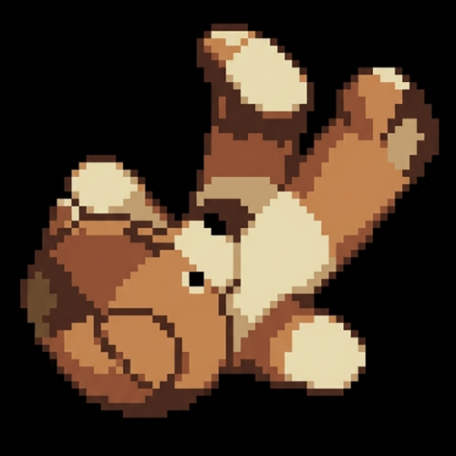

_
falli'N
Structured
Memory for
Autonomous Agents
Memory for
Autonomous Agents

falli'NEntity graphs power smart retrieval. Planning, incident, handoff — each context profile surfaces exactly what your agent needs.
Wake, checkpoint, sleep. Structured session management ensures nothing is lost between runs. Resume from any point.
Built-in task tracking, backlogs, projects, and kanban boards. Your agent manages work, not just memory.
Canvas dashboards, graph themes, and bidirectional kanban sync. Visualize your vault directly in Obsidian.
Raw transcripts become scored observations, automatically routed into structured memory. Importance-weighted, type-tagged.
Ingest transcripts from Claude, ChatGPT, OpenCode, and OpenClaw. Every past conversation becomes searchable memory.
Everything you need — from install to advanced integrations.
Requires Node.js 18+.
init Create or initialize a vaultsetup Bootstrap Obsidian configstore Store a raw memory entryremember Store a typed memorysearch Full-text searchvsearch Vector / semantic searchlist List vault entriesget Retrieve a specific entrystats Vault statisticscontext Retrieve relevant contextinject Dynamic prompt injectionobserve Run observation pipelinereflect Generate weekly reflectiongraph Explore entity graphentities List tracked entitieslink Create entity linksembed Generate embeddingswake Start a new sessionsleep End session with summarycheckpoint Save progress mid-sessionrecover Recover interrupted sessionhandoff Transition between agentsstatus Current session statusrecap Session recaptask add Create a tasktask list List tasksbacklog Manage backlogblocked Show blocked itemsproject Manage projectskanban sync Sync kanban boardcanvas Generate dashboard| Profile | Purpose | Use Case |
|---|---|---|
| default | Balanced retrieval | General tasks and queries |
| planning | Broader strategic context | Architecture decisions, roadmap |
| incident | Recent events and blockers | Debugging, firefighting |
| handoff | Session transition context | Agent-to-agent continuity |
| auto | Hook-selected profile | Automatic based on current task |
Graph themes (neural, minimal), canvas dashboards, Bases views for tasks, bidirectional kanban sync. Run fallin setup --theme neural --canvas to bootstrap.
First-class hook pack. Install with openclaw hooks install fallin then openclaw hooks enable fallin. Auto session lifecycle and context injection.
Serve vault over Tailscale for mobile sync. WebDAV at /webdav for Obsidian mobile. Run fallin tailscale-serve --vault ~/memory.